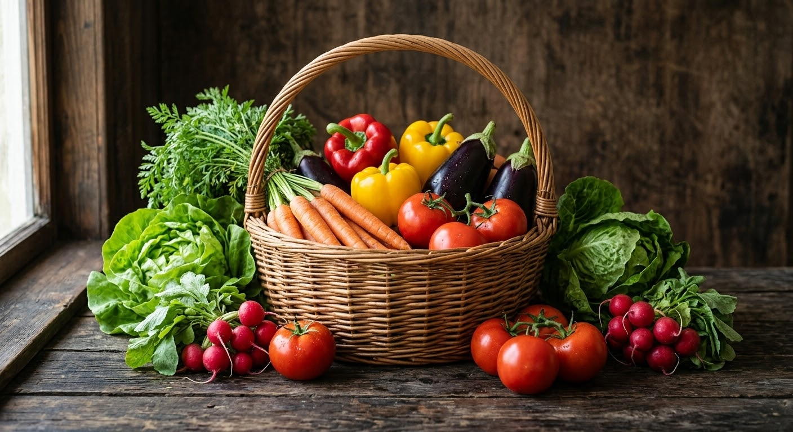
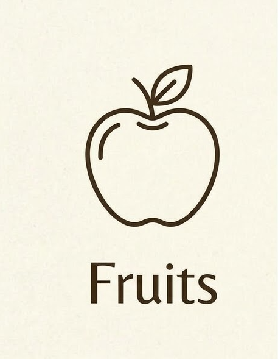
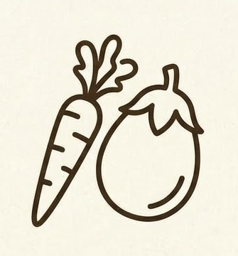
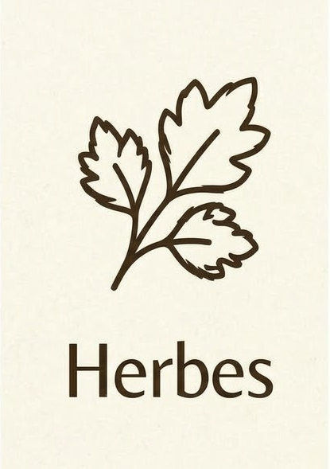
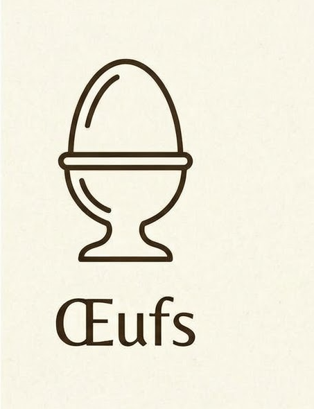

BIENVENUE A L'OASIS DU WAALO
Cultiver la nature, nourir sainement
Nos Produits & Activités
De notre élevage bovin aux paniers de légumes frais, en passant par la pisciculture et notre aviculture, découvrez la diversité de nos productions.
Nos Paniers de Saison

Découvrez nos paniers garnis de produits frais de la ferme, livrés directement chez vous.
COMMANDER MON PANIERExplorez Notre
Boutique en Ligne

Fruits
Légumes
Herbes
ŒufsNotre Philosophie
À l'Oasis du Waalo, nous croyons en une agriculture durable et respectueuse de la nature. En combinant élevage bovin, aviculture, élevage de chèvres, moutons et pisciculture, nous diversifions nos activités pour vous offrir des produits sains et locaux.
Chaque jour, nos équipes travaillent avec passion pour préserver l'équilibre de notre écosystème, assurant le bien-être animal et la qualité supérieure de nos récoltes et élevages.
Contactez-Nous
Keur Mbaye.
Téléphone : +221 77 793 49 91
Email : modougestu@gmail.com